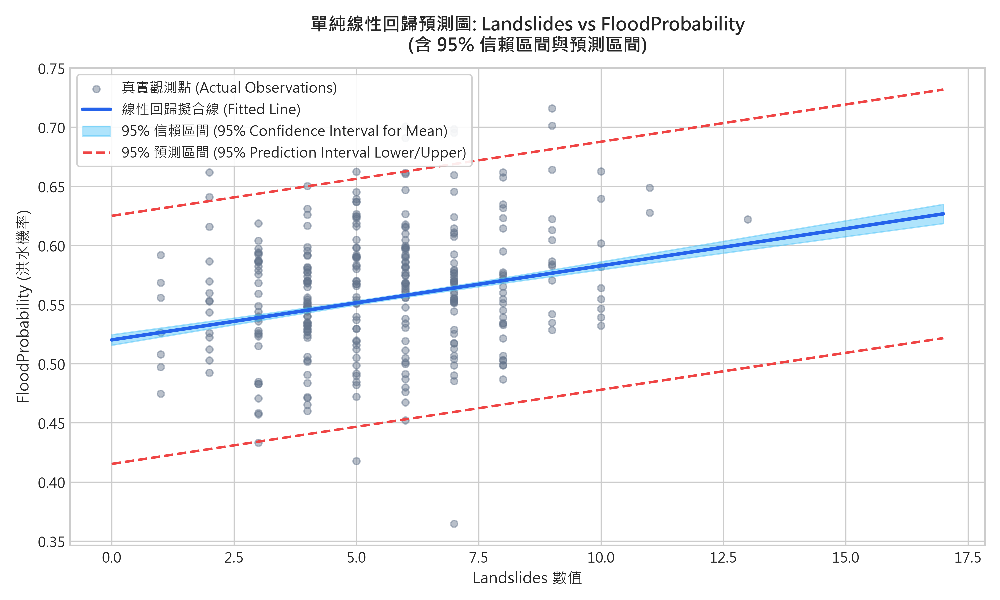
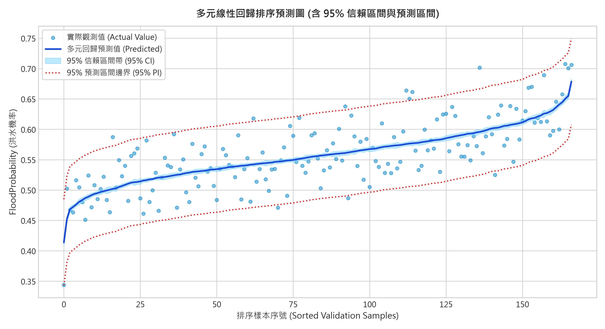
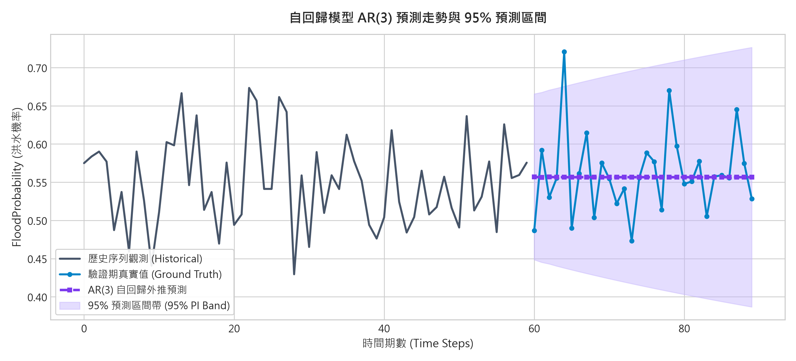
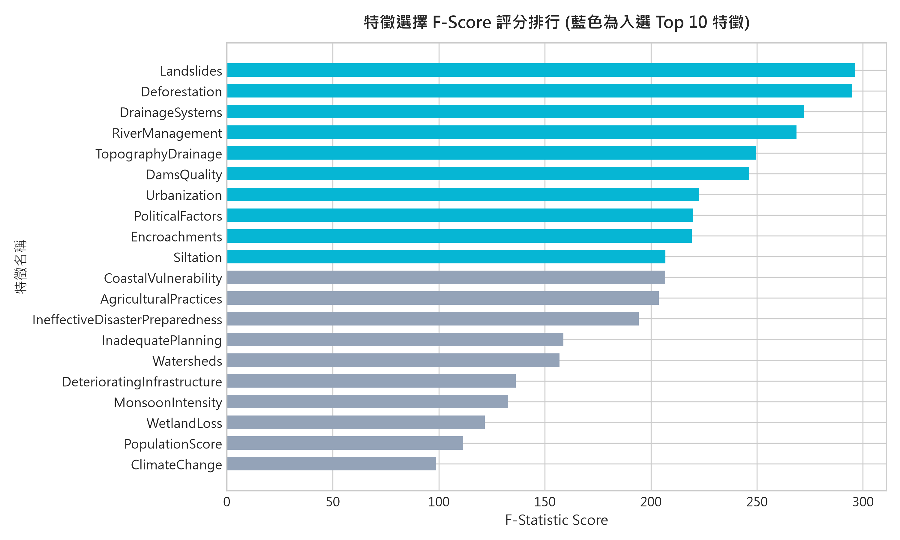
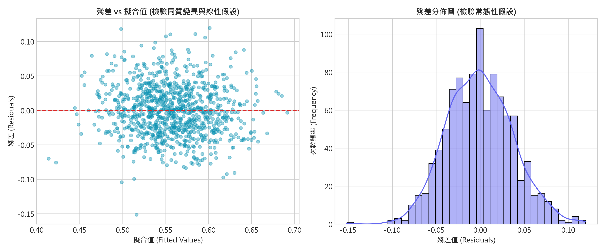
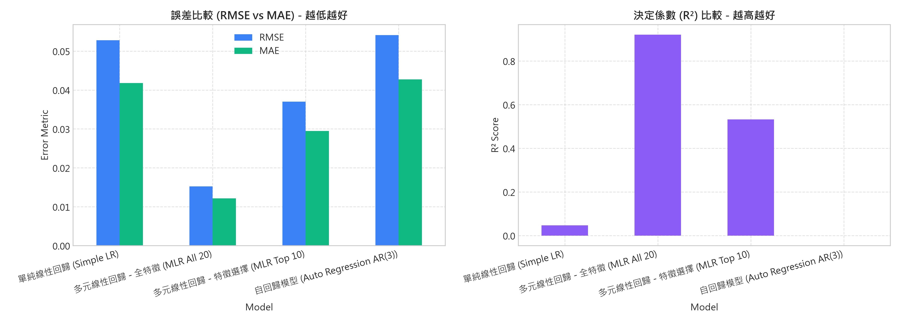

線性回歸預測圖與 95% 信賴區間 (CI) / 預測區間 (PI) 可視化
針對模型預測值繪製不確定性區間帶。信賴區間 (Confidence Interval) 反映母體平均反應 $\text{E}(Y|X)$ 的估計變異；預測區間 (Prediction Interval) 反映單一全新樣本觀測值的波動範圍。
公式：$\hat{y}_0 \pm t_{\alpha/2, df} \cdot s \sqrt{x_0 (X^T X)^{-1} x_0^T}$。
代表在給定特徵條件下，母體平均值所在區間，帶寬較窄，中央處最窄、兩端微寬。
公式：$\hat{y}_0 \pm t_{\alpha/2, df} \cdot s \sqrt{1 + x_0 (X^T X)^{-1} x_0^T}$。
包含模型估計誤差及個別隨機誤差 $\epsilon$，因此比信賴區間更寬，涵蓋單一樣本預測範圍。
特徵選擇實驗室 (Feature Selection Lab)
運用統計檢定 (F-Regression)、Pearson 相關係數與遞迴特徵消除 (RFE) 篩選關鍵水文與環境因子，降低模型維度並避免共線性過擬合。
特徵重要性 F-Statistic 評分排行
特徵篩選清單 (點擊可手動切換)
已勾選 10 項回歸模型訓練與評估 (Model Evaluation)
比較單純線性回歸、全特徵多元線性回歸、特徵選擇多元線性回歸以及時序自回歸 (Auto Regression AR)，並透過 MAE、MSE、RMSE、R² 與調整後 R² 進行嚴謹評估。
模型綜合評估比較矩陣 (Model Evaluation Matrix)
| 模型架構 | 特徵數 (p) | MAE (平均絕對誤差) | MSE (均方誤差) | RMSE (均方根誤差) | 決定係數 (R²) | 調整後 R² (Adj R²) | 評估效能 |
|---|
誤差指標對比 (RMSE vs MAE) - 越低越好
決定係數對比 (R² vs Adj-R²) - 越高越好
即時洪水機率預測模擬器 (Real-time What-If Predictor)
微調各項水文、地形、基礎設施與氣候變遷指標，即時推算預測洪水發生機率，並同步輸出 95% 信賴區間 (針對此條件之期望機率) 與 95% 預測區間 (針對特定觀測之單一樣本機率)。
預測推論結果 (Inference Result)
特徵因子滑桿調節盤 (數值範圍 1 ~ 15)
Python Matplotlib 分析圖表總覽
由 main.py 統計分析管道所產製的高解析圖表，涵蓋單純線性回歸、多元回歸帶狀區間、時序自回歸外推及殘差分佈檢驗。

圖 1：單純線性回歸預測圖 (95% CI + 95% PI)
展示最佳單一因子散布點、擬合回歸線、淺藍 95% 信賴區間帶與紅色虛線 95% 預測區間。

圖 2：多元線性回歸排序檢驗圖 (95% CI + 95% PI)
依預測值升序排列，展示真實觀測與多元回歸預測值之信賴區間帶與預測區間包絡線。

圖 3：自回歸模型 AR(3) 預測走勢與預測區間
以歷史時序進行連續多步預測，紫色虛線為點預測，外圍淺紫色為隨步長拓展之 95% 預測帶。

圖 4：特徵選擇 F-Score 統計檢定排行
依 F-Statistic 由大至小排序，標示入選 Top 10 之關鍵環境因子。

圖 5：回歸殘差診斷與常態性檢定
左圖檢驗殘差對擬合值的獨立與同質變異；右圖檢驗殘差常態分佈假設與偏態。

圖 6：多元模型評估指標綜合對比
橫向對比各回歸模型之 RMSE、MAE 誤差大小與 R² 決定係數優劣。
水文資料中心與自訂 CSV 上傳 (Data Hub)
預覽基準資料集前 100 筆紀錄，或點擊下方按鈕上傳您自己的水文觀測 CSV 檔案進行即時分析與重算。